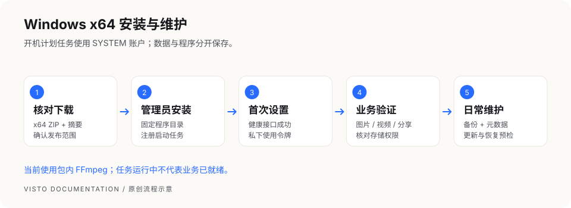

VISTO USER GUIDE / 06
Windows x64 安装与维护
本章面向在 Windows 主机上部署 Server 的维护者。项目成员只需要浏览器，不必安装 Desktop、Node.js 或 Go。以下步骤按当前 Windows 安装及维护脚本编写；正式支持的 Windows 版本、最终包和实机验收以对应 Release 说明为准。安装前确认包与本版本匹配。


1. 准备机器与安装材料
- 使用 x64 Windows；本章不适用于 Windows ARM64，也不适用于 Desktop 安装器。
- 准备本机管理员权限。安装器需要注册开机任务并保护程序、数据目录的访问权限。
- 准备固定本机程序目录，例如
C:\Program Files\Visto Server。不要在下载临时目录、网络共享目录或云同步目录中直接运行。 - 准备原片、预览和备份容量。数据目录默认为
%ProgramData%\Visto\data，备份应另存一块可靠磁盘。 - 从本章上方固定候选下载入口或后续官方 Release 获取同版本 ZIP、SHA-256 和说明。更新时还需要对应版本清单；不存在的下载入口不能用未知镜像替代。
Windows 的主机目录指 Server 所在电脑 的目录，成员电脑上的 D:\素材 不会自动出现在服务器上。映射网络盘也可能只属于你的登录会话，而开机任务使用 SYSTEM 账号；不要用资源管理器能打开网络盘来判断服务一定能读到它。
2. 核对文件并解压
示例版本 1.0.3 只是命令格式示例，请替换为你实际获得的版本。先在下载目录检查摘要：
Get-FileHash .\Visto-Server_1.0.3_windows-x64.zip -Algorithm SHA256
把完整的 64 位结果与可信发布页或同名 .sha256 对照；不一致时停止安装，重新下载。SHA-256 验证完整性，下载来源仍须核对。
在管理员 PowerShell 中解压到一个尚未使用的固定目录：
Expand-Archive -LiteralPath "$env:USERPROFILE\Downloads\Visto-Server_1.0.3_windows-x64.zip" `
-DestinationPath 'C:\Program Files\Visto Server'
Set-Location 'C:\Program Files\Visto Server'
Get-ChildItem
目录应包含 bin、web、visto-server.json、VistoServer.Security.psm1 和安装/启动/备份/恢复/更新/卸载脚本。当前启动脚本还要求 runtime\ffmpeg\ffmpeg.exe 与 ffprobe.exe；缺失时不能从网上随便补二进制。已有安装不能用解压覆盖来升级。
3. 安装开机任务
在管理员 PowerShell 的程序目录执行：
Set-ExecutionPolicy -Scope Process Bypass -Force
.\Install-VistoServer.ps1
该执行策略只对当前 PowerShell 进程有效。若组织策略禁止运行脚本，交给系统管理员处理，不调整整机策略来绕过组织限制。
安装器注册名为 Visto Server 的计划任务，使用 SYSTEM 账号在开机时运行，异常退出时尝试重启。程序、数据与备份目录会限制普通用户写入；不要安装后再给“所有人”开放写权限，也不要将这些目录替换成目录联接或符号链接。
4. 确认就绪并完成首次设置
Get-ScheduledTask -TaskName 'Visto Server'
Get-ScheduledTaskInfo -TaskName 'Visto Server'
Invoke-WebRequest -Uri 'http://127.0.0.1:8787/health/ready' -UseBasicParsing
.\bin\visto-server.exe --address 127.0.0.1:8787 status
计划任务存在、显示运行中只是进程层证据；健康接口返回成功、浏览器能打开页面才继续首次设置。默认入口为 http://127.0.0.1:8787/。若改过 visto-server.json 的 address，用实际端口检查。
初始化令牌在 %ProgramData%\Visto\data\host-management-token.txt，安装器只显示位置和短指纹。需要时由本机管理员私下读取并填入首次设置页；不要截图、发给成员或打包进求助材料。随后按“首次设置与登录”建立工作空间、Owner 账户及一次性的目录权限选择。
5. 程序、配置、数据分别在哪里
| 内容 | 默认位置或入口 | 用途 |
|---|---|---|
| 程序与网页 | C:\Program Files\Visto Server（示例） |
固定程序目录，更新由脚本替换 |
| 配置 | 程序目录下 visto-server.json |
监听地址、数据目录及部署选项 |
| 实例数据 | %ProgramData%\Visto\data |
数据库、秘密、数据目录内上传及预览 |
| 默认备份 | %ProgramData%\Visto\backups |
数据归档和同名元数据 |
| 启停 | 计划任务 Visto Server |
默认开机自启、使用 SYSTEM |
| 当前视频依赖 | 程序目录 runtime\ffmpeg |
当前包内运行时；以后以包说明为准 |
修改配置前保留受保护的原配置副本，修改后重启任务。配置与令牌包含敏感信息，不作为公开求助附件。
6. 日常启动、停止和诊断
Stop-ScheduledTask -TaskName 'Visto Server'
Start-ScheduledTask -TaskName 'Visto Server'
.\bin\visto-server.exe --data-dir "$env:ProgramData\Visto\data" doctor
.\bin\visto-server.exe --data-dir "$env:ProgramData\Visto\data" diagnostics export `
--output "$env:USERPROFILE\Desktop\visto-diagnostics.zip"
停止命令发出后需确认任务和相关进程确实停止。备份、恢复和更新脚本会进行自己的停服确认，不要删掉检查来强制执行。如果文件锁导致备份失败，任务可能保持停止；解除占用后先检查备份结果，再显式启动任务并验证健康和媒体，不假定自动恢复。诊断包先自行检查敏感内容，再按受控方式交给维护者。
7. 备份与恢复
先通知成员暂停写入，再运行：
.\Backup-VistoServer.ps1 -BackupDirectory 'D:\Visto-backups'
成功结果必须同时有 ZIP 与同名 .zip.json 元数据，保留二者并复制到独立位置。该备份覆盖实例数据目录；配置在程序目录、外部本机媒体目录、WebDAV 和 S3 原片需另行保护。不能把一个 ZIP 当成全部项目原片的备份。
恢复分为两步。以下文件名为示例，替换为真实备份：
.\Restore-VistoServer.ps1 -BackupFile 'D:\Visto-backups\visto-server-data-20260930-120000.zip' -CheckOnly
.\Restore-VistoServer.ps1 -BackupFile 'D:\Visto-backups\visto-server-data-20260930-120000.zip' -ConfirmRestore
只读检查通过后，先确认当前数据也有独立备份，再执行替换。不要同时传 -CheckOnly 与 -ConfirmRestore。摘要、归档路径或来源数据目录不符时停止；不编辑元数据骗过检查，也不用恢复命令做跨目录迁移。恢复后检查项目、旧媒体、新上传与分享。
8. 更新与失败恢复
下载同一版本 ZIP、发布摘要和版本清单，保留程序目录配置并准备更新前备份。将路径和摘要替换为真实值：
.\Update-VistoServer.ps1 `
-PackageArchive 'D:\Downloads\Visto-Server_1.0.3_windows-x64.zip' `
-ExpectedSha256 '<发布页公布的64位SHA-256>' `
-ManifestFile 'D:\Downloads\该版本的清单.json' `
-BackupDirectory 'D:\Visto-backups'
不传 -ManifestFile 时脚本寻找 <安装包完整路径>.manifest.json；只有 ZIP 和摘要并不足够。清单必须与包版本匹配，发布者没提供时联系维护者，不自行拼写。
更新只接受完整交付 ZIP，包括固定视频二进制、许可证、构建记录和视频审计材料；不要裁剪文件或向运行时目录随意添加 DLL。
脚本校验并暂存输入，备份数据、停止任务、替换程序并等待恢复。失败时会尝试还原旧程序及更新前数据。即使脚本报告成功，也要核对健康接口与实际业务；端口能连不代表媒体和数据库已正常。当前 Windows 脚本没有独立的 Rollback-VistoServer.ps1，不要照搬 Unix 回滚命令。自动恢复失败时保留原程序、备份与错误输出，交给维护者处理。
9. 常见问题按现象处理
| 现象 | 先检查 | 下一步 |
|---|---|---|
| 提示需要管理员权限 | PowerShell 是否“以管理员身份运行” | 重新打开管理员窗口，进入程序目录 |
| 脚本被系统拦截 | 文件来源、摘要与组织策略 | 按安全软件/管理员提示处理，不全局关闭保护 |
| 缺少 FFmpeg、网页或安全模块 | 是否解压完整、是否拿错包 | 重取同版本完整包，保留错误信息 |
| 任务存在但页面打不开 | 任务结果、健康接口、配置端口 | 执行 doctor；不要把任务存在当成功 |
| 端口被占用 | Get-NetTCPConnection -LocalPort 8787 -ErrorAction SilentlyContinue |
安装会先拒绝占用，尚不创建新数据或任务；找到占用程序后决定是否改配置，不盲目结束进程 |
| 服务读不到映射盘 | SYSTEM 与登录用户的访问差异 | 用受维护存储连接或明确服务可访问的存储方案 |
| 更新提示文件锁或停服失败 | 是否还有服务/媒体进程 | 保留现场，解决占用后再试，不手工覆盖 |
| ACL 或重解析点检查失败 | 目录权限、联接/符号链接 | 修复受信目录布局，不删保护检查 |
10. 卸载与交付检查
.\Uninstall-VistoServer.ps1
默认停止并删除开机任务，保留实例数据；不等于程序目录和外部原片已删除。只有独立备份可读、确定永久清除实例数据后，才使用 -RemoveData。不要将清除命令当成排障方法。
交付前逐项确认：重启电脑后服务就绪；Owner 可登录；成员仅看授权项目；旧媒体能打开；新上传能生成预览；HTTPS 分享可访问；备份 ZIP 与元数据已独立保存。当前候选已在干净 Windows 11 客体执行安装、浏览器播放、更新回退、恢复、整机重启及卸载保留检查。文件锁失败仍须按上面的人工处置步骤处理；有 NVIDIA 显卡不代表此组件支持 NVENC。